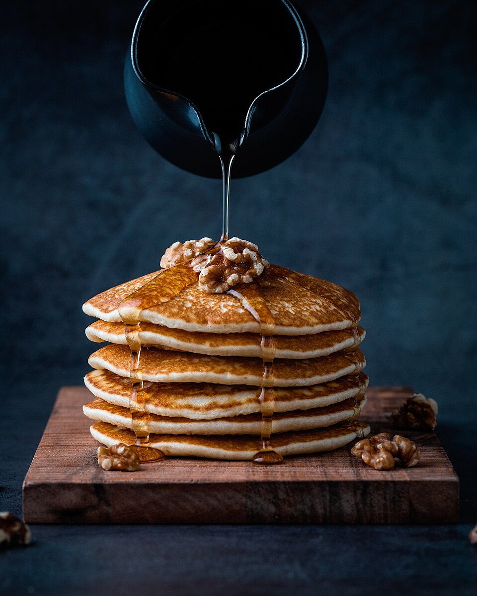

Pancakes

Photo: Mae Mu, CC0, via Wikimedia Commons
Description
Fluffy homemade pancakes are a weekend breakfast staple, and they come together with ingredients you probably already have on hand. A little melted butter and not overmixing the batter are the keys to a tender, light result.
Serve them stacked high with butter and maple syrup, or dress them up with fresh fruit, nuts, or a drizzle of honey. The batter can also be made the night before and kept in the fridge until morning.
Ingredients
- 1 1/2 cups all-purpose flour
- 3 1/2 teaspoons baking powder
- 1 tablespoon granulated sugar
- 1/4 teaspoon salt
- 1 1/4 cups milk
- 1 large egg
- 3 tablespoons butter, melted, plus more for the pan
- 1 teaspoon vanilla extract
- Maple syrup, honey, and chopped walnuts, for serving
Steps
- In a large bowl, whisk together the flour, baking powder, sugar, and salt.
- In a separate bowl, whisk the milk, egg, melted butter, and vanilla until well combined.
- Pour the wet ingredients into the dry ingredients and stir gently until just combined. A few small lumps are fine — do not overmix.
- Heat a lightly buttered skillet or griddle over medium heat.
- Pour about 1/4 cup of batter per pancake onto the hot pan. Cook until bubbles form on the surface and the edges look set, about 2 to 3 minutes.
- Flip and cook for another 1 to 2 minutes, until golden brown. Repeat with the remaining batter.
- Serve warm with butter, maple syrup or honey, and chopped walnuts.
Home